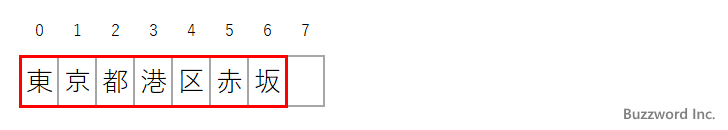
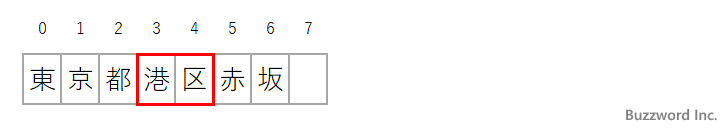

- Home ›
- Python入門 ›
- Python正規表現
文字列の全体がパターンとマッチするか調べる(Pattern.fullmatch)
Pattern クラスの fullmatch メソッドは、対象の文字列全体がパターンとマッチするかどうかを調べます。対象の文字列の一部分でマッチする場合も fullmatch メソッドではマッチとはなりません。ここでは Python の正規表現で fullmatch メソッドを使って文字列の全体がパターンとマッチするか調べる方法について解説します。
fullmatchメソッドの書式と使い方
Pattern クラスの fullmatch メソッドは、対象の文字列全体がパターンにマッチするかどうかを調べます。書式は次の通りです。
Pattern.fullmatch(string[, pos[, endpos]])
1 番目の引数に対象の文字列を指定します。文字列全体に対してパターンがマッチするかどうかをチェックし、マッチした場合はマッチオブジェクト(Match クラスのインスタンス)を返します。マッチしなかった場合は None を返します。
省略可能な 2 番目と 3 番目の引数には、対象の文字列の中でマッチするかどうかをチェックする範囲を指定します。 pos から endpos - 1 までが範囲となります。
fullmatch メソッドは search メソッドと似ていますが、 search メソッドが文字列全体を対象にいずれかの部分を対象にパターンとマッチするかどうか調べるのに対して、 fullmatch メソッドは文字列全体がパターンととマッチするかどうかを調べます。
その為、対象の文字列が '東京都港区赤坂' でパターンが '港区' だった場合、 search メソッドの場合はマッチしますが、 match メソッドの場合はマッチしません。パターンが '東京都港区赤坂' だった場合はどちらのメソッドもマッチします。
次のサンプルを見てください。 fullmatch メソッドを使ってマッチするかどうかを調べ、マッチした場合はマッチした部分文字列を取得します。
import re
def checkMatch(msg, pat):
pattern = re.compile(pat)
result = pattern.fullmatch(msg)
if result :
print(result.group(0))
else :
print('Don\'t matched')
checkMatch('東京都港区赤坂', r'東.*区')
>> Don't matched
checkMatch('東京都港区赤坂', r'東.*坂')
>> 東京都港区赤坂
対象の文字列がパターンにマッチするかどうかを調べ、マッチした場合はマッチした文字列を取得しました。
※ search メソッドの使い方については「文字列のいずれかの位置でパターンとマッチするか調べる(Pattern.search)」を参照されてください。
※ マッチオブジェクトの詳しい利用方法については「マッチオブジェクトからマッチした文字列の情報を取得する(Match)」を参照されてください。
チェックする範囲を設定する
fullmatch メソッドの 2 番目と 3 番目の引数を指定することで、対象の文字列の中のチェックする範囲を設定することができます。例えば対象の文字列が '東京都港区赤坂' だった場合、 fullmatch メソッドで 2 番目と 3 番目の引数を省略した場合は '東京都港区赤坂' が対象となります。

fullmatch メソッドの 2 番目の引数に 3 、 3番目の引数に 5 を指定した場合は対象の文字列が '港区' となります。

次のサンプルを見てください。文字列は同じですが、対象の範囲を変えて fullmatch メソッドを実行しています。
import re
def checkMatch(msg, pattern, start, end):
result = pattern.fullmatch(msg, start, end)
if result :
print(result.group(0))
else :
print('Don\'t matched')
msg = '東京都港区赤坂'
pattern = re.compile(r'港区')
checkMatch(msg, pattern, 0, 5)
>> Don't matched
checkMatch(msg, pattern, 3, 5)
>> 港区
fullmatch メソッドは文字列全体がパターンとマッチするかどうか調べますが、対象の文字列の範囲を設定した場合は、設定した範囲の文字列全体がパターンとマッチするかどうか調べるため 2 回目はマッチしました。
-- --
Python の正規表現で fullmatch メソッドを使って文字列の全体がパターンとマッチするか調べる方法について解説しました。
( Written by Tatsuo Ikura )

著者 / TATSUO IKURA
初心者～中級者の方を対象としたプログラミング方法や開発環境の構築の解説を行うサイトの運営を行っています。